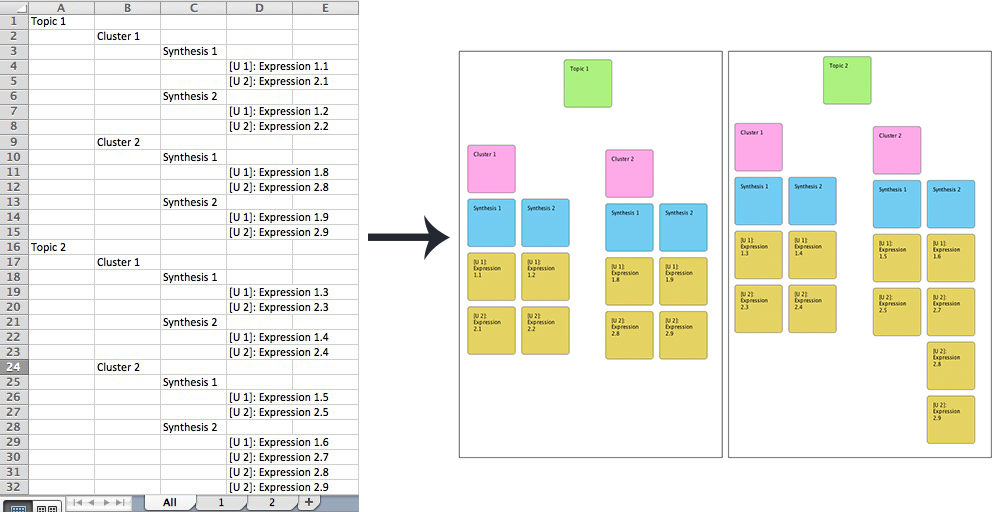

Version 1.0.0
The Creator allows you to create visualizations of Affinity Diagrams with very little manual effort. The diagrams hierarchy and content can be captured and maintained in a spreadsheet (e.g. in Excel), while the Creator takes care of the visual representation. For this to work the spreadsheet must be structured like in the follwing picture. Topics (green) will be layouted in pages, Cluster (magenta) can be moved around on pages and within a cluster the layout is happening by itself.

You can use the file AffinityDiagramExample.xlsx as a template.
The next step is to export the sheet with the hierarchy (called "all" in the picture above) as .csv to make it readable for the creator. To ensure a maximum encoding compatibility choose "MS-DOS Comma Separated (.csv)
Next open the .csv file in Affinity Diagram Creator.
When you open a csv file, the Creator will roughly lay out the diagram and you can then move around the cluster with the mouse. (If you can't see the diagram after opening, try zooming all the way out.)
Some Post-Its are colored red. This shows you that the text would be too long to fit onto the Post-It given the selected font size. There's no need for action as the font size will be reduced accordingly, but you can shorten the text if you want.

When you export the Diagram, the marker color will not be exported but the original color of the Post-It.
Grab and move a cluster of Post-Its by clicking and dragging it with the mouse.
You can zoom by
You can pan by
The size of a page, the size and colors of the Post-Its, the fontsize and all margins and offsets can be configured in File -> Preferences. You can also specify if you want a grid. Specifying 0 for gridsize will show no grid. You can also change the marker color that warns you about overly long text.
Changing the preferences will only have an effect when you reopen a file. (immediate change will be a feature in upoming releases)
You can also save a layout as an .adc file. Choosing a .adc file in the Open-Menu will load the underlying .csv file and restore your previous layout work. .csv or .adc files are independent of preferences. It will still rely on the original .csv file for the content, which also means that you can make changes to the content, reload it and it will work just fine.
The diagram can be exported as .gif or as .png images via File -> Export PNG or Export GIF.
While this software is working fairly well and I’ve tried to give it a certain usability standard, it's is not consumer grade. Therefore you have to give it some slack :) I am interested in feedback and bug reports but I will not provide support as such and most likely not comply to feature requests (except if it’s a really interesting one).
Author: Marc Breisinger
email: marc.breisinger@bmw.de
The software is free for all and may be distributed freely. If you want to contribute to the developement, you can do so here:
https://github.com/MarcBreisinger/AffinityDiagramCreator.git